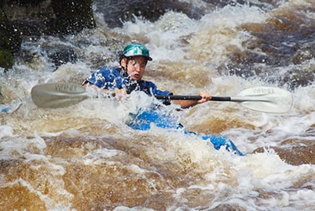

Visit Clearwater Kayak Outfitters!
Clearwater Kayak Outfitters is located in central Florida, near the Ocala National Forest. To experience the natural beauty of central Florida’s waterways, call us 866-555-1234 for information or reservations.
The launch site for day trips is located at:
147 West ATC Drive
Ocala, FL 34475
You can also email joan@cko.atc for more information.